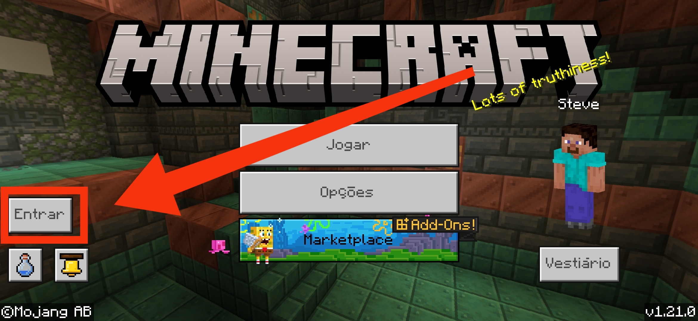

Introdução
Bem-vindo à nossa comunidade de Minecraft! O servidor "HexaRealm" oferece uma experiência única de jogo com uma variedade de recursos e eventos para todos os jogadores. Nossos membros desfrutam de um ambiente amigável e divertido, com suporte constante para garantir uma jogabilidade de alta qualidade. O servidor está em sua primeira fase, portanto apresse-se para ajudar a elevar nossa comunidade dentro do jogo, lembre-se de estar bem equipado e preparado para enfrentar criaturas hostis!
Curiosidades:
O Porque desse nome? O "HexaRealm" é uma ideia que baseia-se na nomeclatura do "Hexapoliedro regular" uma figura que descreve um poliedro com seis faces que são todas iguais e regulares, ou seja, são todas quadrados iguais e possuem ângulos retos. Em termos práticos, refere-se a um cubo, uma forma de menção direta à geometria característica do Minecraft. Já a terminação "Realm" deriva de "Realms", que são os servidores oficiais oferecidos pela Mojang para hospedar mundos multiplayer. Eles são projetados para facilitar a criação e manutenção de servidores privados, de encontro à nosso objetivo de oferecer uma sociedade ativa de jogadores, aqui chamados de Hexa-players.
Download do APK
Para jogar no nosso servidor, você precisará da versão compatível do Minecraft Bedrock. Baixe o APK através do link abaixo:
Adicione HexaRealm à sua lista de servidores
Criar Conta Xbox
Para uma experiência mais completa, crie sua conta Xbox para poder desbloquear o sistema de conquistas e impulsionar sua gameplay. É fácil e intuitivo, clique no link abaixo e informe seus dados para a criação da conta, você receberá um código de confirmação por e-mail e precisará criar sua gamertag (nome de jogador).
Conta Xbox criada? Abra seu jogo e procure a opção "ENTRAR", basta você entrar pelo e-mail e senha criados, a partir da próxima vez que entrar no jogo a conta Xbox começará a ser vinculada automaticamente ao Minecraft.
Solicite seu acesso ao Servidor
Evie em nosso suporte seu nickname para que possamos permitir seu ingresso ao servidor, no ícone verde, "canto inferior de sua tela" existe um bate-papo, use para se comunicar com o suporte, sobretudo para enviar seu nome de jogador e garantir sua vaga, pode ser que nossa resposta leve tempo, experimente voltar depois e conferir seu bate-papo.Considerações Finais
Estamos ansiosos para ver você em nosso servidor e esperamos que você tenha uma experiência incrível no HexaRealm. Caso encontre algum problema ou tenha dúvidas, não hesite em nos contatar. Nossa equipe está sempre disponível para ajudar e garantir que sua experiência de jogo seja a melhor possível.
Se você gosta do servidor e quer ajudar a torná-lo ainda melhor, considere deixar um feedback ou uma sugestão. Apreciamos muito a sua participação e contribuição para a nossa comunidade.
Boa diversão e bons jogos!